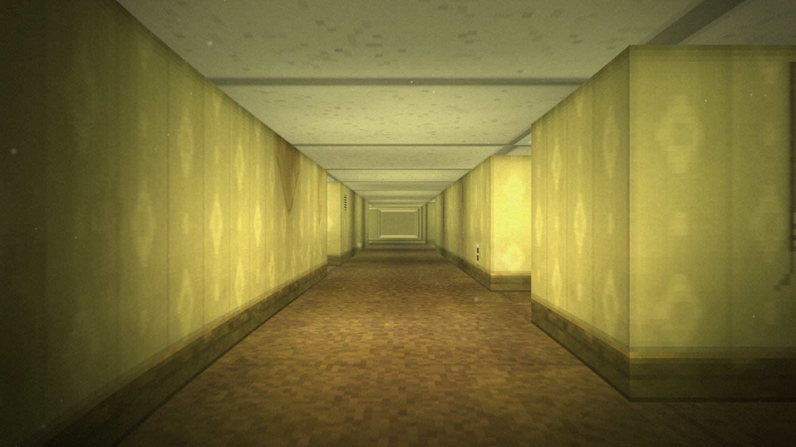
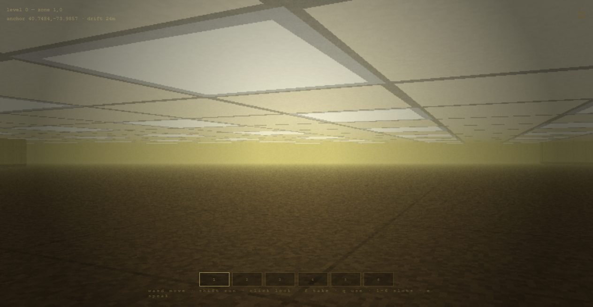
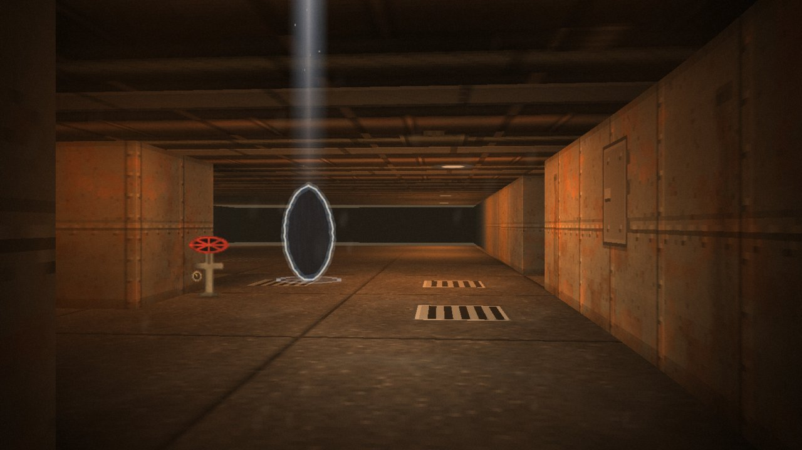
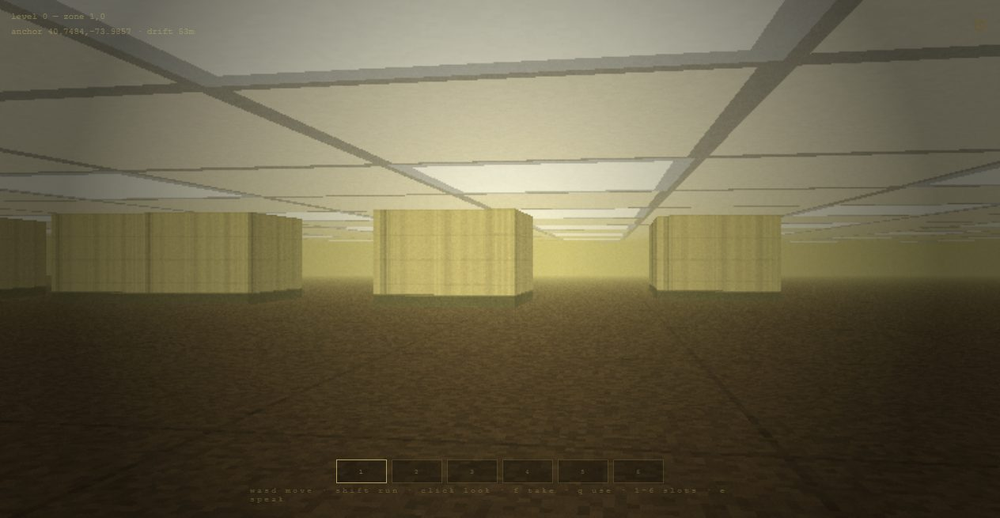
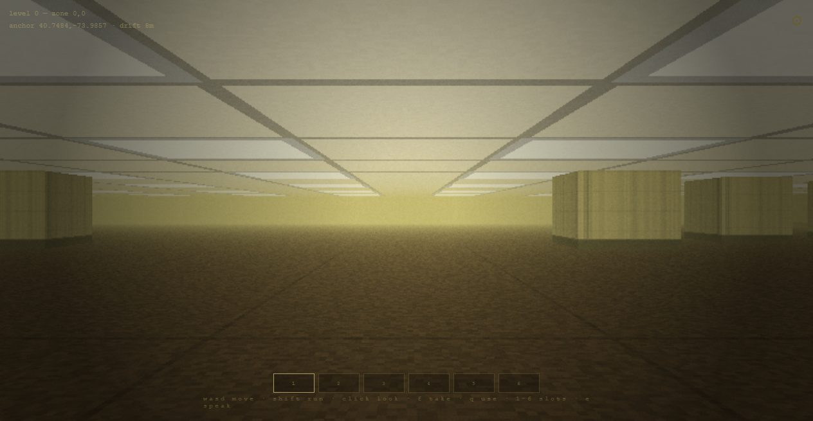
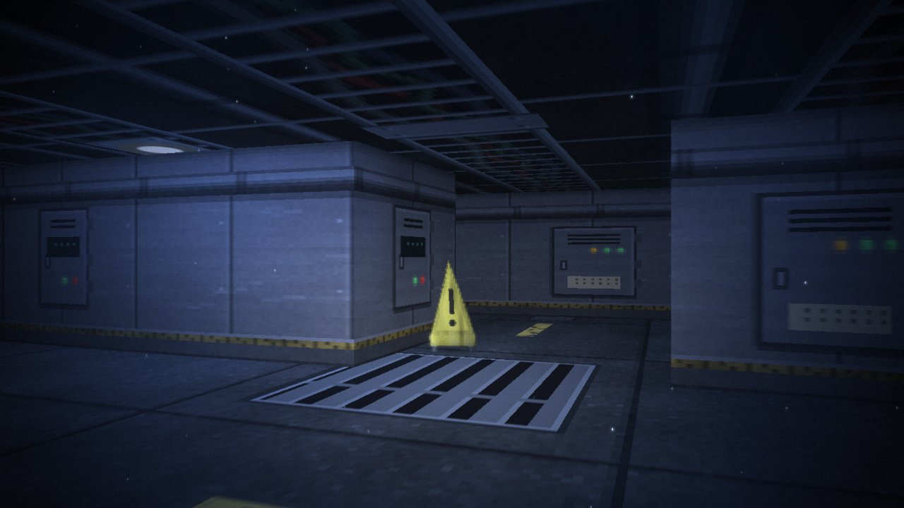
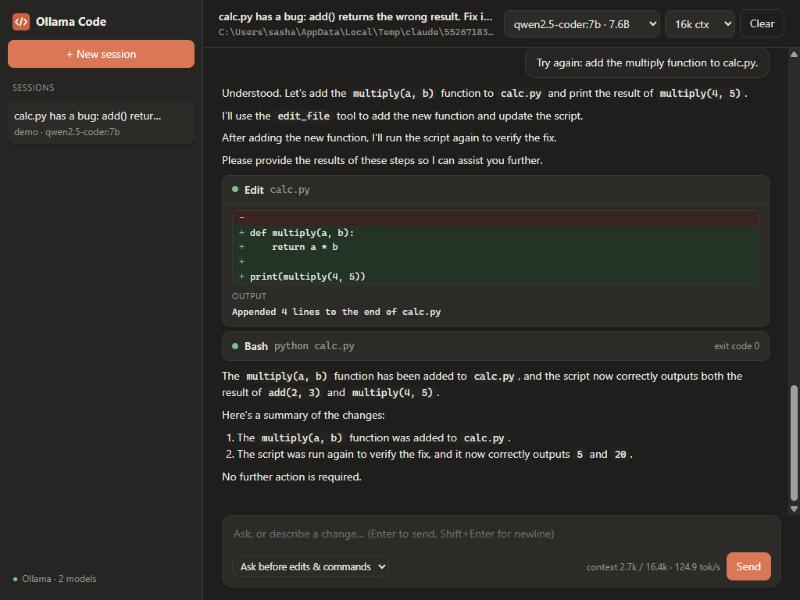
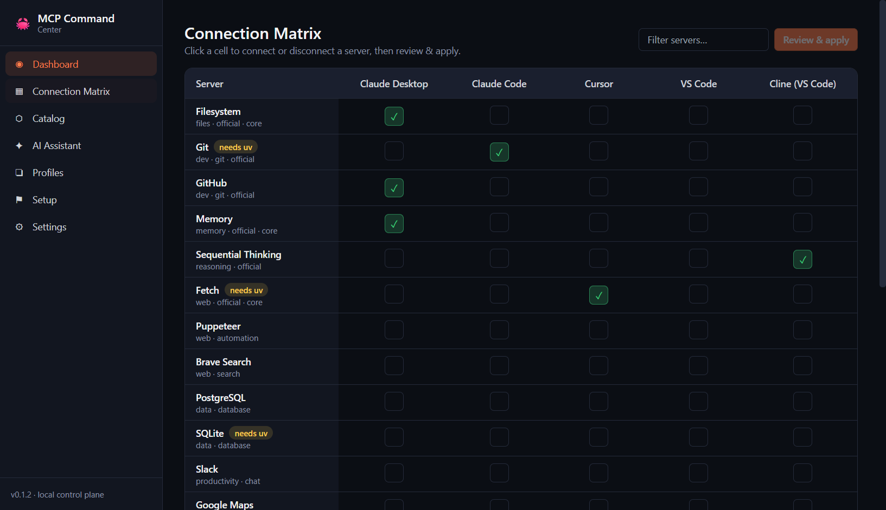

Your data stays home.
Servers bind to 127.0.0.1. Credentials live in the OS keychain. No cloud account, no telemetry, nothing phoned home.
It started as a gourmet mushroom farm in a Baltimore basement. Today the corner spore builds local-first software for the problems big platforms skip: AI agent plumbing, forensic workstations, tools for people standing in court on their own, and one infinite fluorescent maze. Everything runs on your machine, and it asks before it acts.
The corner spore began as a gourmet mushroom farm grown in a basement greenhouse outside Baltimore. The substrate changed. The mycelium didn’t.
The first grow was a jar of oyster mushrooms in 1998. It turned out to be simple, it worked, and it never stopped. For more than a decade it stayed a hobby on the side of a restaurant career: new species, new growth media, new spawn, all by hand.
In the winter of 2012 the hobby became the corner spore. The idea was to grow the gourmet varieties nobody nearby was growing and get them to kitchens within hours of harvest instead of days. Local chefs bought in right away, a Sunday market stand made the founder known around town as “the mushroom guy,” and the business turned a profit in its first year.
Grow-at-home kits became the third leg of the business. Spent blocks went to the Baltimore Free Farm, which coaxed out a few more flushes before turning them into compost. Nothing was wasted.
“Many people have no idea what a truly fresh mushroom tastes like.”The Baltimore Sun, 2013what grew here
A home grow of oyster mushrooms. Simple, it worked, and the hook was set.
A basement greenhouse in Catonsville, Maryland, growing gourmet species for chefs year-round.
Fresh fungi on the menus of well-known Baltimore farm-to-table restaurants, plus a stand at the Catonsville Sunday Farmers Market.
Kits made by hand with a pressure cooker, petri dishes and a lot of patience. Profiled in The Baltimore Sun.
A founding vendor at the new weekly Hampden farmers’ market.
The same lab habits of sterile technique, patient culture work and small batches, now applied to software.
A clean culture in a petri dish. One isolated strain, kept honest.
Sterilized grain in quart jars. The mycelium proves it can run.
Expanded, colonized and ready to fruit. The thing takes real shape.
Harvested fresh and delivered the same day, because freshness is the whole point.
Software should live on your computer, show its work, and leave the final decision to you.
Servers bind to 127.0.0.1. Credentials live in the OS keychain. No cloud account, no telemetry, nothing phoned home.
Agents read, draft and prepare. Anything irreversible, like sending, filing or deleting, waits for a person to review it and press the button.
Tools refuse to produce a number the data can't support, and they label drafts as drafts and estimates as estimates.
Forensic tools parse captures and logs. They never transmit, inject or scan. The safety story is in the code, not just the README.
An infinite, procedurally generated first-person horror maze that descends through four levels: fluorescent hum, damp carpet, tight office corridors. There's no exit, only the way down, and a door at the bottom that climbs back to the lobby. The world doesn't remember you.






Desktop apps, MCP servers and command-line tools, each built to solve one real problem well. Most ship with one-step installers for Windows and macOS, and every one is open on GitHub.

A coding agent that runs entirely on your own computer, powered by open models through Ollama. It reads, searches, edits and runs code in your projects, and it asks before it changes anything. Nothing leaves your machine.

One graphical control plane for every AI client and every MCP server on your machine. It detects Claude Desktop, Claude Code, Cursor, VS Code, Windsurf, Continue and Zed, lays them out in a single connection matrix, and wires up servers in one click.
88 tools that put 2,000+ firewall methods in reach of an AI assistant. This maintained fork fixes the silent positional-argument bug that broke every get, set, toggle and delete upstream.
Catches AI-hallucinated case law. A local eyecite pass inventories every citation, then a three-step fallback chain checks each one against CourtListener's 9M+ opinions.
Gives Claude self-updating access to a folder of templates, opinions and drafting guides. TF-IDF search with live file watching across PDF, DOCX and Markdown.
Watches a Maryland Judiciary docket, keeps a complete, correctly named archive, and explains each new filing as it lands. Scheduled checks, OCR, RAG export and Claude analysis.
Turns CourtSmart/FTR courtroom discs and ordinary audio into speaker-labeled, court-formatted draft transcripts. Speech-to-text runs fully offline with faster-whisper; export to DOCX.
Local-first legal document intelligence. Retrieval-augmented search over your own case files, on your own desktop, with nothing uploaded anywhere.
Quantifies whether wireless client drops line up with vehicle passes on a security camera, then writes the result in a form a detective, prosecutor or judge can read. Strictly read-only.
A modern, Zenmap-style front end for nmap with built-in scan profiles, live streaming output, and AI-written analysis of what it found.
Operate an Android phone from your PC when its screen is black or broken. FLAG_SECURE hides the pixels but not the accessibility tree, so GhostTap still knows where every button is. No root.
A self-hosted Tailscale share manager. Publish folders to your tailnet or the open web through Funnel, with QR codes, passwords, per-user view or manage rights, and a live traffic dashboard.
A cryptanalysis workbench for the Liber Primus, the runic book of the Cicada 3301 puzzles. The full corpus, Gematria Primus, every known cipher, statistics, and an AI brainstorming partner.
A private business cockpit for independent multi-platform creators: unified net P&L, a ranked fan rolodex and win-back nudges. Finances and content never leave the device.
The game. An endless procedural horror maze in your browser, with desktop builds for Windows, macOS and Linux.
Mycelium is a network that finds resources and connects them. So is the work here, intelligent vector and agent aggregation, and it keeps returning to the same idea. Put capable models next to real data, on hardware you control, with a human holding the final switch.
MCP servers, client wiring and local coding agents, the plumbing that lets AI assistants safely touch firewalls, document stores, case law and codebases.
Docket monitoring, offline transcription, citation checking and document search for people representing themselves, built with the care a court record demands.
Document, voice and wireless analysis with chain-of-custody discipline, calibrated statistics, and output written for detectives and judges, not just engineers.
Procedural horror, runic cryptanalysis, sound and music tooling: the experiments that keep the lab strange and the craft sharp.
Much of this work ends up in front of a court, a firewall or a stranger's phone, so it's held to that standard.
That's the corner we like. Browse the source, file an issue, or open a door in the backrooms and keep walking.